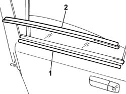

7010D26 rear side descending window glass scraper (outer) r r
- Path
- Procedures > 70 FITTINGS > 7010 PASSENGER COMPARTMENT REAR SIDE DOORS > 7010D rear side door window glasses > 7010D26 rear side descending window glass scraper (outer) r r
- Kind
- repair procedure (removal / refitting; the operation number is the code)
- Applies to
- all engines; all production periods
- Interactive page
- https://sloeber94.github.io/elrnDB-fPnd/en/#/2753106
Applies to: all engines; all production periods
 Removing
Removing
 Refitting
Refitting1. Position a strip of suitable adhesive tape along the lower edge of the exterior glass scraper.
2. Using the appropriate tool, release the exterior glass scraper and remove it.
 | Name | Country |
|---|---|---|
- | Scraper blade | 1.878.077.000 |

Applies to: all engines; all production periods
Refitting
RemovingRemove the strip of adhesive tape positioned previously.
Clean any sealant residues from the door.
Check the condition of the exterior glass scraper.
Place the exterior glass scraper in position.
Check that the exterior glass scraper is working properly.